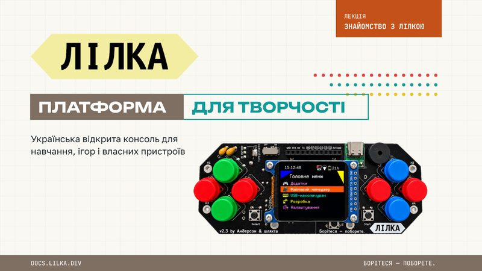
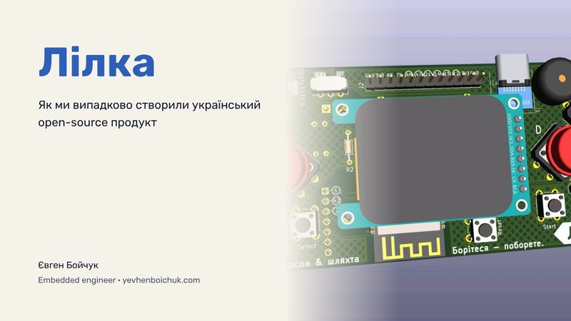

Знайомство з Лілкою
Що таке Лілка, звідки вона з'явилася і як влаштована платформа для творчості, навчання та ігор.
Відкрити презентацію
Лілка — Львівська політехніка
Як ми випадково створили український open-source продукт. Історія розвитку Лілки та Keira OS від Євгена Бойчука.
Відкрити презентацію